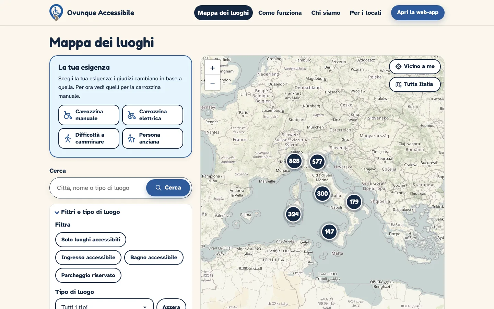
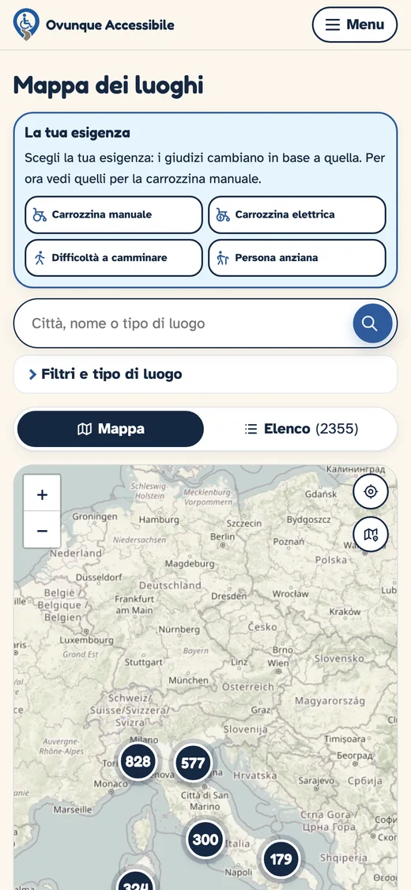
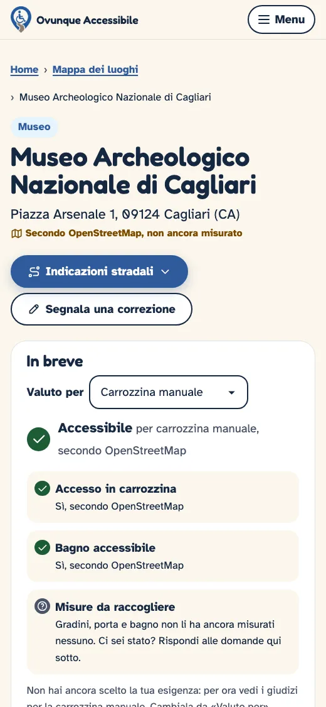
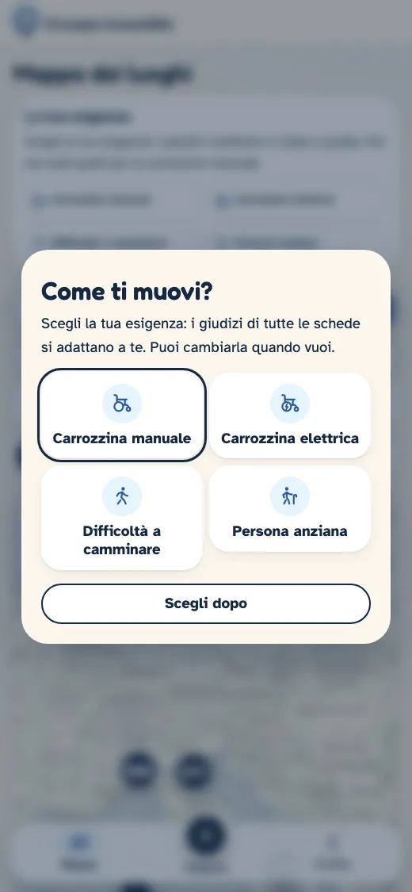
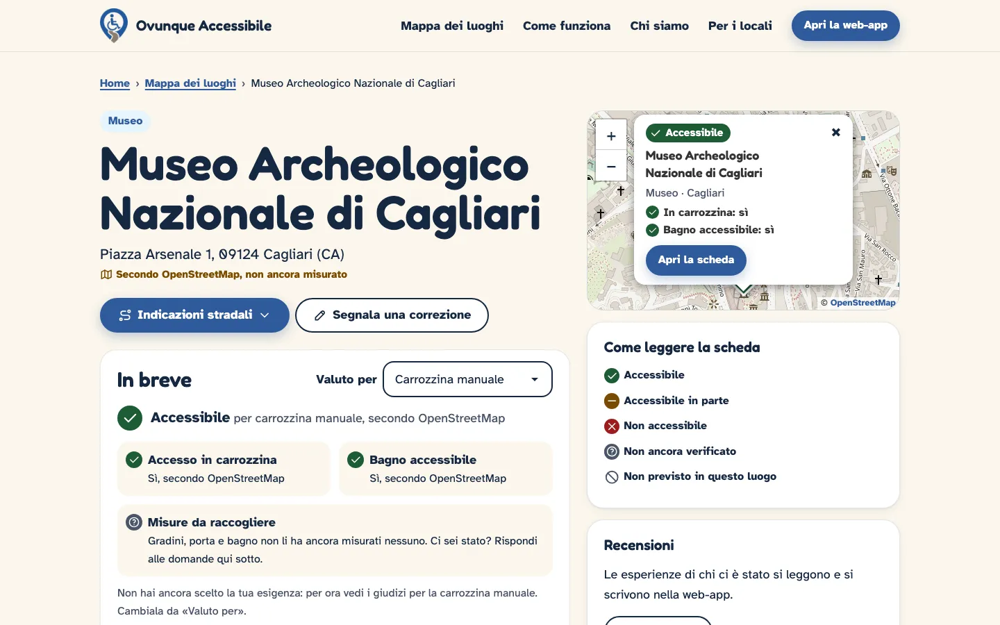

Lavoro reale · Sito e web-app
Ovunque Accessibile
Angelo e Lorenzo, due ragazzi in carrozzina, volevano un posto dove sapere prima di uscire se un luogo va bene per chi lo deve raggiungere. Noi abbiamo costruito il sito e la web-app.


- Per
- Angelo e Lorenzo
- Cosa
- Sito, web-app e pannello
- Prima versione
- In una settimana
- Accessibilità
- WCAG 2.2 livello AA
Da dove siamo partiti
«Accessibile» spesso non vuol dire niente: un gradino all'ingresso, un bagno non attrezzato, informazioni vecchie. Angelo e Lorenzo volevano schede con dati concreti (rampe, ascensori, parcheggi, bagni, larghezza delle porte, gradini), scritte da chi in quel posto ci è stato. Per chi si muove in carrozzina, per chi ha difficoltà a camminare, per le persone anziane, per le famiglie con il passeggino e per chi li accompagna.
Cosa abbiamo costruito
Un pezzo alla volta, tutto sullo stesso archivio di dati: così l'app per gli store, quando arriverà, non dovrà rifare niente da capo.
- Parte 1
Una pagina di anteprima
Pubblicata subito, con il modulo per lasciare la propria email ed essere avvisati del lancio.
- Parte 2
Il sito
Mappa ed elenco dei luoghi, ricerca per città o nome, filtri (ingresso, bagno, parcheggio), «Vicino a me» e una scheda per ogni luogo, con giudizio, misure e data dell'ultima verifica. Si consulta senza account.
- Parte 3
La web-app
Si installa sul telefono dalla pagina, senza passare dagli store. Con un account si salvano i preferiti, si scrivono recensioni con domande guidate e si segnalano luoghi nuovi con le misure e fino a 5 foto.
- Parte 4
Il pannello per Angelo e Lorenzo
Vedono la scheda com'è ora e com'è nella proposta, poi approvano o respingono con un motivo. Moderano recensioni e foto.
Dal telefono
Il sito e la web-app sono pensati prima di tutto per il telefono.
La pagina iniziale 
La scheda di un luogo 
«Come ti muovi?»
Una scheda, da vicino
Il giudizio cambia in base all'esigenza scelta, e la scheda dice sempre da dove arriva l'informazione e quando è stata controllata.

Le scelte, e perché
Un giudizio per ogni esigenza
Carrozzina manuale, carrozzina elettrica, difficoltà a camminare, persona anziana: un luogo può andare bene per una e non per l'altra. Alla prima visita chiediamo «Come ti muovi?».
Si vede quanto è affidabile
«Verificato sul posto» o «Segnalato dalla community»; dopo 24 mesi la scheda diventa «da ricontrollare».
Niente pubblicato senza approvazione
Segnalazioni, foto e recensioni escono solo dopo il sì di Angelo e Lorenzo.
Foto rispettose
Il telefono toglie la posizione GPS prima dell'invio, e ogni foto chiede una breve descrizione per chi non vede.
Un sito che tutti possono usare
Standard WCAG 2.2 livello AA: tastiera, lettori di schermo, testi ingrandibili, bottoni grandi, nessuna informazione affidata solo al colore. Pagine controllate con axe, zero errori.
Il loro marchio, più leggibile
Logo e colori di sempre; per i testi Atkinson Hyperlegible, un carattere pensato per chi vede poco, e Fredoka nei titoli al posto di Chalkboard SE, che su Android e Windows non c'è.
I dati restano di chi li scrive
Dal profilo si scaricano i propri dati e si elimina l'account; l'archivio sta in Europa.
Una settimana per provarlo
A una settimana dalla prima chiamata, sito e web-app erano già da provare dal telefono. Il lavoro continua insieme a loro: i prossimi passi sono le pagine per Google di ogni luogo e l'app per Android.
Hai un progetto da far partire?
Raccontaci cosa vuoi fare: ti diciamo come lo costruiremmo e quanto ci vuole.